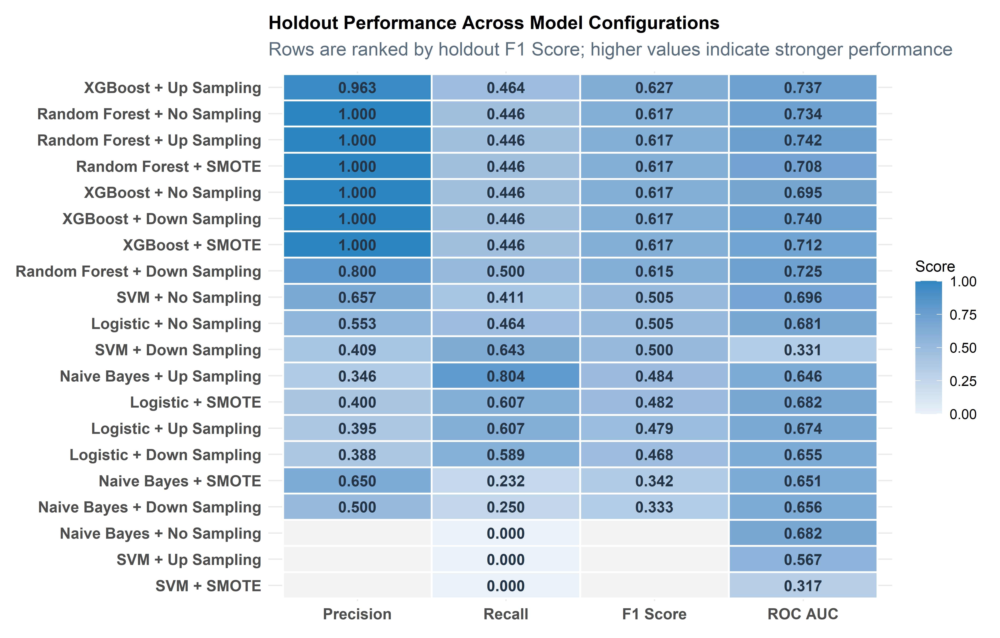
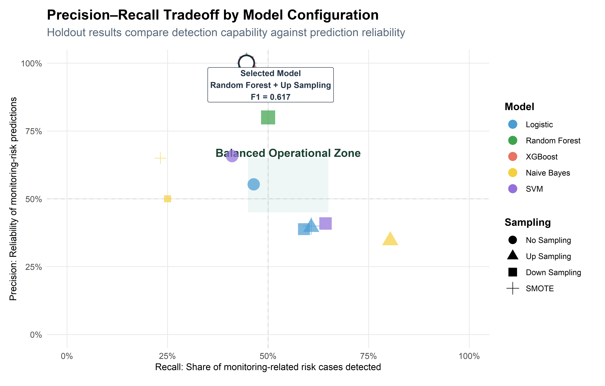
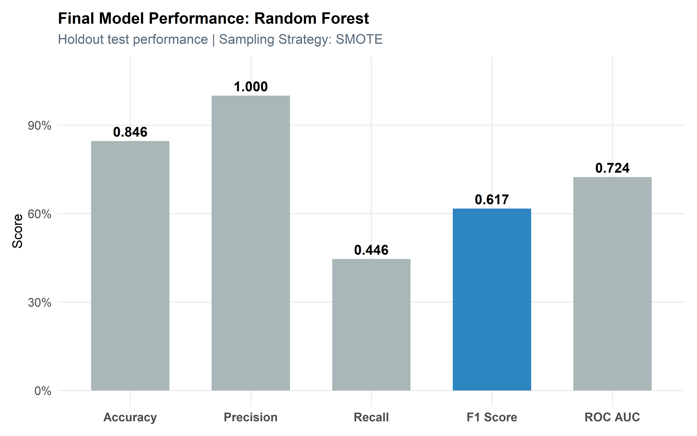
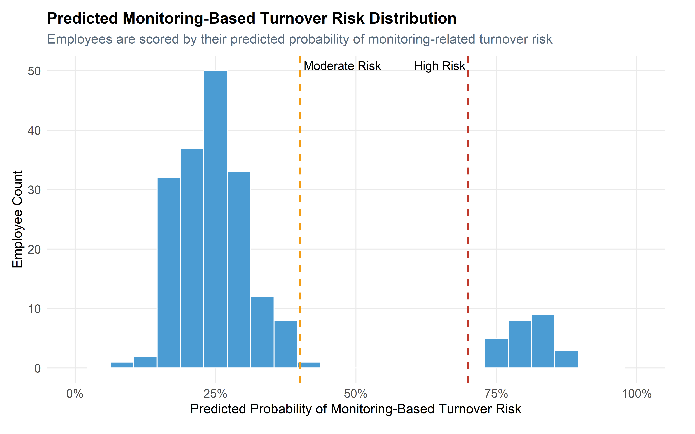
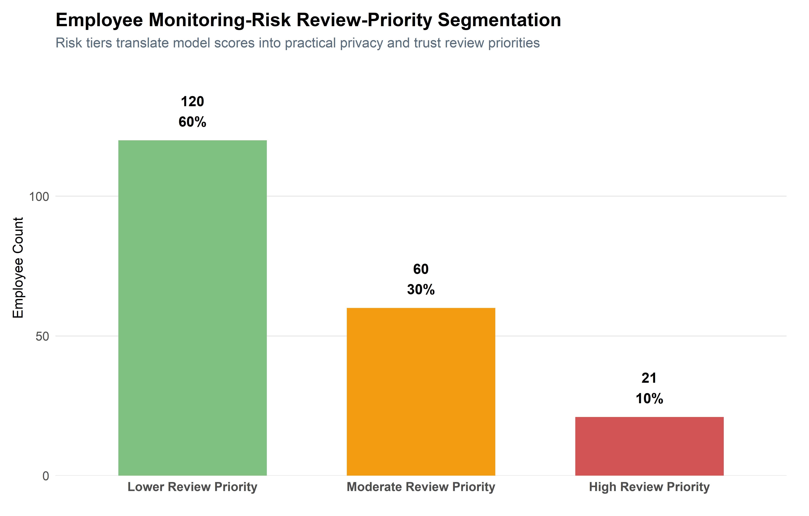

Monitoring & Privacy Risk Modeling
This section develops and evaluates predictive models to identify employees at risk of monitoring-related turnover, interpret key privacy and surveillance risk patterns, and translate model outputs into executive-level workforce trust recommendations.
Executive Summary
This analysis develops a predictive modeling framework to identify employees at risk of monitoring-related turnover using a synthetic, research-informed HR dataset.
Multiple machine learning models—including Logistic Regression, Random Forest, XGBoost, Support Vector Machines, and Naive Bayes—were evaluated across multiple sampling strategies to address class imbalance and compare predictive performance under different modeling conditions.
Results show that model effectiveness is shaped by both algorithm choice and data strategy. Sampling strategies such as up-sampling, down-sampling, and SMOTE changed model behavior in meaningful ways, demonstrating that class-balancing choices can materially affect precision, recall, F1 Score, and overall usability.
The final model-selection process uses cross-validated F1 Score as the primary ranking metric, while holdout test performance is used as a stability check to confirm that the selected configuration remains practically usable on unseen data.
Rather than relying on a single predictive signal, monitoring-related turnover risk is influenced by a combination of privacy perceptions, monitoring intensity, workplace trust, workload pressure, wellbeing, and organizational support factors.
From a business perspective, this framework enables a shift from reactive privacy concern response to proactive workforce trust and monitoring-risk management, supporting earlier intervention, better governance, and improved retention outcomes.
Modeling Overview
This section builds on the exploratory analysis by applying predictive modeling techniques to identify employees at risk of monitoring-related turnover.
Rather than relying on a single model, multiple algorithms are evaluated and compared to determine the most effective approach for workforce decision-making.
Each model is assessed using cross-validation and evaluated across multiple sampling strategies to address class imbalance.
The objective is not only to identify the most accurate model, but to determine which approach best aligns with organizational priorities.
Data Preparation & Modeling Framework
Target Definition
The target variable for this analysis is monitoring-related turnover risk, representing whether an employee is likely to show elevated turnover risk associated with workplace monitoring, privacy concerns, or surveillance-related strain.
This binary outcome is structured as a classification problem, with levels defined as “No” and “Yes”, where “Yes” represents employees flagged as higher risk for monitoring-related turnover in the synthetic dataset.
Within this framework, the target should not be interpreted as a directly observed resignation event. Instead, it reflects a workforce-risk signal tied to monitoring perceptions, privacy concerns, trust, workload strain, and employee experience.
This distinction is important because monitoring-related risk is both a workforce analytics issue and a governance issue. The goal is not to label employees, but to identify patterns that may warrant earlier HR, leadership, or monitoring-governance review.
Data Partitioning
To evaluate model performance objectively, the dataset is split into training and testing subsets.
The training set is used to fit and tune models, while the test set is reserved for final evaluation. Stratified sampling is applied to preserve the original class distribution of monitoring-based turnover risk, ensuring that model performance reflects realistic conditions.
Feature Engineering Pipeline
A standardized preprocessing workflow was applied to ensure consistent evaluation across all modeling approaches.
Workforce variables representing organizational context, monitoring exposure, privacy perceptions, employee wellbeing, trust, managerial support, workload conditions, and behavioral indicators were transformed into model-compatible formats while preserving interpretability for downstream HR and governance analysis.
Categorical workforce attributes were converted into numeric representations using dummy encoding, while continuous variables were normalized where required for scale-sensitive algorithms such as Logistic Regression and Support Vector Machines.
Predictors with zero variance or limited informational value were removed to reduce noise and improve model stability across resampling conditions.
This preprocessing framework ensures that observed performance differences are driven primarily by modeling behavior and sampling strategy rather than inconsistent data preparation.
Cross-Validation Strategy
Cross-validation is used to evaluate model performance during training and reduce the risk of overfitting.
By partitioning the training data into multiple folds, each model is evaluated across different subsets of the data. This provides a more robust estimate of model performance compared to a single train-test split.
Model Development
Multiple predictive modeling approaches were evaluated to determine how different algorithms interpret monitoring-related workforce-risk patterns within a synthetic HR environment.
The goal was not simply to identify the highest-performing model, but to compare how various modeling strategies balance interpretability, detection capability, stability, and operational usefulness within a privacy-preserving analytics framework.
Each model was trained using a standardized preprocessing workflow to ensure that performance differences reflected modeling behavior rather than inconsistent data preparation.
Model Pipelines
Workflows are used to combine preprocessing steps and model specifications into a single pipeline.
This ensures that all transformations are applied consistently during both training and prediction, reducing the risk of data leakage and simplifying model management.
Evaluation Metrics
Model performance is evaluated using a combination of classification metrics.
Accuracy provides an overall performance measure, while precision and recall capture trade-offs between false positives and false negatives. The F1 Score balances these two metrics, and ROC AUC evaluates the model’s ability to distinguish between classes.
Using multiple metrics ensures a comprehensive evaluation aligned with business priorities.
Hyperparameter Tuning
For models with tunable parameters, grid search is used to identify optimal configurations.
This process evaluates multiple parameter combinations using cross-validation, selecting those that maximize predictive performance. Tuning helps improve model accuracy while maintaining generalizability.
Model Training
Multiple supervised learning algorithms were evaluated, including Logistic Regression, Random Forest, XGBoost, Support Vector Machines, and Naive Bayes.
Each model was trained under multiple class-balancing conditions to evaluate how resampling strategies influence monitoring-related risk detection behavior. This is particularly important because employees flagged for monitoring-related turnover risk typically represent a smaller portion of the workforce population.
Rather than focusing on a single performance statistic, the modeling framework evaluates how each configuration balances detection capability, prediction reliability, and operational practicality.
This comparative approach reinforces the broader objective of the project: demonstrating how research-informed synthetic workforce data can support realistic HR analytics workflows while preserving employee privacy and organizational confidentiality.
Model Evaluation
This evaluation framework examines how different modeling strategies perform on unseen workforce data while emphasizing practical HR and monitoring-governance decision-support considerations rather than purely statistical optimization.
Because workforce intervention and governance-review resources are finite, the analysis prioritizes models that balance early monitoring-related risk detection with prediction reliability. The objective is to support proactive privacy, trust, and retention review processes while minimizing unnecessary intervention burden.
Evaluation therefore focuses not only on predictive accuracy, but also on how effectively each configuration translates into operationally useful workforce prioritization signals.
Rather than focusing solely on accuracy, evaluation emphasizes the precision–recall tradeoff, balancing the ability to detect monitoring-related risk with the cost of unnecessary review.
This ensures model selection aligns with operational priorities, where both detection capability and decision efficiency matter.
Key metrics include:
- Accuracy → Overall correctness
- Precision → Reliability of positive monitoring-risk
predictions
- Recall → Ability to detect monitoring-related risk
cases
- F1 Score → Balance between precision and
recall
- ROC AUC → Overall classification strength
This comparison highlights the trade-offs between detection, prediction reliability, and practical review burden.
Test Set Performance
Final model assessment is conducted using the holdout test dataset to evaluate how each configuration performs on previously unseen workforce observations.
This stage acts as a practical stability check rather than the primary model-selection mechanism. Cross-validation identifies the strongest generalized configurations during training, while holdout evaluation confirms whether those patterns remain operationally useful under unseen conditions.
This distinction is especially important for monitoring-related turnover risk because privacy, trust, and surveillance-related concerns may vary across organizational context and employee groups.
The evaluation framework therefore separates model discovery from final operational validation, creating a more defensible and realistic assessment process for workforce-risk modeling.
Sampling Strategy Framework
Sampling techniques are applied within the preprocessing pipeline to ensure consistency across models.
By integrating sampling directly into the workflow, transformations are applied only to the training data, preventing data leakage and preserving the integrity of model evaluation.
Sampling Recipes and Evaluation Setup
Each sampling strategy is embedded directly into the modeling recipe. This ensures that class balancing occurs only within the training folds during cross-validation, preventing leakage into validation or test data.
Model Evaluation Results & Insights
This section synthesizes model performance across sampling strategies and evaluation metrics, providing a comparative view of how different approaches perform under realistic conditions.
The focus shifts from individual model behavior to cross-model insights, highlighting trade-offs that directly impact workforce decision-making.
The goal is to identify a model that balances detection capability with operational efficiency—minimizing both missed risk and unnecessary intervention.
Sampling Strategy Comparison
Class imbalance is a major challenge in monitoring-related turnover-risk modeling because employees flagged for monitoring-related risk typically represent a smaller portion of the workforce population.
To better understand how class-balancing strategies influence workforce-risk detection, multiple resampling approaches were evaluated across all algorithms. The goal is not to artificially inflate performance, but to examine how different balancing strategies affect the tradeoff between detection capability and prediction reliability.
This comparison helps demonstrate how modeling decisions influence practical workforce prioritization outcomes within HR analytics and monitoring-governance environments.
The models include:
- No Sampling (baseline)
- Up Sampling (increase minority class)
- Down Sampling (reduce majority class)
- SMOTE (synthetic minority generation)
The goal is to understand how balancing the dataset impacts model performance.

The heatmap shows holdout test performance across model and sampling combinations. It is used as a confirmation view rather than the sole model-selection mechanism. The final model is selected using cross-validated F1 Score among configurations that also produce usable holdout performance.
This distinction matters because a model can look strong on one holdout metric while being less stable during cross-validation. In this report, cross-validation provides the primary model-selection evidence, while holdout results confirm whether the selected configuration remains practically useful on unseen data.
The results show that no single configuration dominates every metric. Some approaches improve recall but reduce precision, while others are more conservative. This reinforces that monitoring-related turnover modeling should be interpreted as a decision-support layer, not as an automatic classification system.
Precision–Recall Curve Analysis

The precision–recall view shows how each model configuration balances detection capability against prediction reliability. Configurations farther to the right detect more employees with monitoring-related turnover risk, while configurations higher on the chart produce more reliable positive predictions.
The selected configuration is highlighted with an outlined marker. It is not chosen because it maximizes a single metric in isolation; rather, it provides the strongest cross-validated F1 Score among configurations that also produced usable holdout performance.
This reinforces the business logic behind the model-selection process: the goal is not to flag as many employees as possible or eliminate all false positives, but to create a practical monitoring-risk screening layer that can guide earlier review without replacing human judgment.
Cross-Validated Model Comparison
Model Selection
Model selection was guided by a two-step rule designed to balance statistical rigor with business usefulness.
First, candidate configurations were ranked by cross-validated F1 Score, which serves as the primary model-selection metric because it balances precision and recall under class imbalance. Second, the leading candidates were reviewed on the holdout test set to confirm that they still produced usable positive-class predictions on unseen data.
This second step matters. A configuration can rank highly during resampling yet behave too aggressively or too weakly on the holdout set. For this reason, the final model is selected as the strongest cross-validated configuration that also satisfies minimum holdout stability requirements.
In this run, the recommended configuration was Random Forest with Up Sampling. The model should be interpreted as a risk prioritization tool, meaning it helps identify employees or workforce segments that may warrant earlier privacy, trust, or monitoring-governance review, while leaving final decisions to HR leaders, managers, governance stakeholders, and organizational context.
Selected Model Holdout Performance

Risk Distribution
The risk distribution shows how the selected model assigns monitoring-related turnover-risk probabilities across the holdout test set. These scores should be interpreted as review-priority signals, not definitive employee labels.
Because monitoring-related risk is tied to privacy perceptions, trust, workload pressure, and governance context, probability scores should be interpreted as prioritization signals that help identify where additional HR or monitoring-governance review may be warranted.

Review-Priority Segmentation
The segmentation view translates model probabilities into practical review-priority tiers. These tiers are not automatic decisions; they organize attention for HR, leadership, governance, or workforce planning review.
Because monitoring-related risk is sensitive and context-dependent, relative ranking is more useful than rigid fixed thresholds. In practice, HR and governance teams could adjust review queues based on available capacity, privacy sensitivity, intervention goals, and tolerance for missed risk.

For monitoring-related turnover risk, these tiers should be treated as privacy, trust, and governance prioritization signals. Lower-priority employees may require normal monitoring-governance communication, moderate-priority employees may warrant trend monitoring, and high-priority employees may warrant earlier HR or governance review.
Final Model Summary & Key Takeaways
The selected model represents the strongest cross-validated F1 Score among configurations that also met minimum holdout stability requirements. This means the final model was not selected only because it performed well during resampling; it also had to produce usable positive-class predictions on unseen data.
While the absolute performance values remain moderate, the model is useful as a risk prioritization tool because it helps rank employees by relative likelihood of monitoring-related turnover risk. This distinction is important: the model should not be used to make automatic employment decisions. Instead, it supports earlier privacy-aware review, monitoring-governance conversations, and more focused workforce trust management.
📊 Key Takeaways
Random Forest
Optimized using Up Sampling with a focus on F1 Score
Why This Model Was Selected
Why This Model Was Selected
The final model was selected using a two-step process: cross-validation identified strong candidate configurations, and the holdout test set confirmed whether those candidates remained practically usable on unseen data.
In this run, the selected configuration was Random Forest with Up Sampling. It achieved a cross-validated F1 Score of 0.918, while its holdout test results produced precision of 1, recall of 0.446, and F1 Score of 0.617.
The selected model met the holdout stability screen and ranked strongest by cross-validated F1 Score among stable candidates.
This selection rule balances model-development rigor with practical business usefulness. Cross-validation identifies the strongest generalizable configuration, while the holdout stability check ensures the final model still produces usable predictions on unseen data.
Because the model is designed for workforce risk screening, predictions should be treated as prompts for further HR or manager review, not as standalone conclusions about employee behavior.
Selected Model Performance Metrics
The table below reports holdout test performance for the selected configuration. These values are not used alone to select the model; instead, they confirm whether the cross-validated winner remains practically usable on unseen data.
Top Model Configurations
Performance metrics indicate which configurations screen monitoring-related turnover risk most effectively. The next step is to translate those outputs into practical workforce trust, privacy, and monitoring-governance insight by connecting model behavior back to broader organizational patterns.
This section interprets the likely drivers of monitoring-related turnover risk and links those patterns to actionable workforce response areas.
Driver Interpretation
Because the selected predictive workflow does not provide a straightforward, model-agnostic feature-importance ranking, driver interpretation is based on the broader analytical pattern observed across the modeling and exploratory analysis.
The results suggest that monitoring-based turnover risk is not driven by one isolated factor. Instead, risk appears to reflect a combination of privacy perceptions, monitoring intensity, trust, workload, wellbeing, and organizational support factors.
This is important from a business perspective because monitoring risk should not be treated only as a technology or compliance issue. Effective monitoring governance requires coordinated action across transparency, fairness, privacy protection, manager communication, workload expectations, and employee trust.
Feature → Action Mapping
To translate model insights into practical action, key risk areas are mapped to targeted workforce interventions. This bridges the gap between predictive analytics and real-world decision-making by connecting model interpretation to practical HR response strategies.
Business Impact & Decision Guidance
The modeling framework is designed to support workforce decision-making at a strategic level while preserving employee privacy through synthetic data simulation.
Rather than functioning as an automated employment-decision system, the selected model should be interpreted as a workforce intelligence layer that helps HR, leadership, and governance stakeholders prioritize where additional privacy, trust, monitoring-policy, or retention review may be beneficial.
The practical value of the framework lies in its ability to:
- Identify workforce segments that may warrant earlier monitoring-governance review
- Support proactive privacy and trust risk management
- Improve allocation of HR, leadership, and governance review resources
- Enhance organizational visibility into monitoring-related workforce-risk patterns
- Demonstrate privacy-preserving HR analytics workflows
Importantly, the model is intended to support human decision-making, not replace it. Monitoring-related workforce outcomes remain dependent on organizational context, leadership interpretation, employee communication, governance standards, and ethical review processes.
This project demonstrates how predictive analytics can be integrated into HR environments responsibly using synthetic, research-informed data that protects employee confidentiality while still enabling advanced workforce analysis.
Strategic Decision Guidance
This model is best deployed as a risk prioritization tool, not as a standalone decision system.
- High-priority employees or groups → Prioritize for HR, manager, privacy, or monitoring-governance review
- Moderate-priority employees or groups → Monitor privacy concerns, workload, trust, and support trends
- Lower-priority employees or groups → Maintain baseline monitoring communication, trust-building, and governance practices
The value of the model is not in replacing human judgment, but in helping decision-makers focus attention earlier and more consistently.
Model Limitations
The model should be interpreted within the context of synthetic data, simulated workforce patterns, and organizational variability.
- Predictions reflect patterns in synthetic data, not observed outcomes from a real organization
- Performance may shift when applied to different employee populations, industries, or monitoring environments
- Risk scores should support review and prioritization, not automatic employment decisions
- Human context, privacy governance, and ethical review remain essential before any intervention is taken
Final Takeaway
This project demonstrates how synthetic, research-informed workforce data can support realistic HR analytics workflows without exposing sensitive employee information.
Monitoring-related turnover risk is not driven by a single variable. It reflects a network of privacy, trust, monitoring, workload, wellbeing, and organizational support signals that collectively shape how employees experience workplace surveillance.
The modeling framework shows how predictive analytics can move beyond static reporting and contribute to proactive workforce trust management, early risk visibility, and operational prioritization while maintaining strong privacy-preserving principles.
Although predictive performance remains intentionally moderate and realistic, the selected workflow successfully demonstrates how monitoring-related workforce-risk modeling can function as a practical decision-support capability within HR and governance environments.
Used appropriately, this type of framework can help organizations identify emerging monitoring-related workforce patterns earlier, allocate review resources more effectively, strengthen transparency and trust, and support more informed strategic HR decision-making.